接下来,试试用TortoiseSVN修改文件,添加文件,删除文件,以及如何解决冲突等.
添加文件
在检出的工作副本中添加一个Readme.txt文本文件,这时候这个文本文件会显示为没有版本控制的状态,如图:
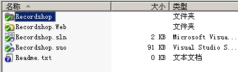
这时候,你需要告知TortoiseSVN你的操作,如图:
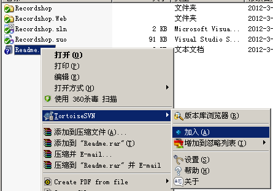
加入以后,你的文件会变成这个状态,如图:
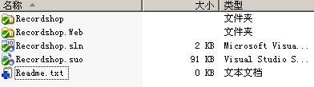
这时候使用TortoiseSVN进行提交.这样别人就能看到你所做的更改了,如图.
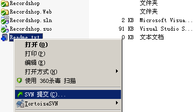
修改文件
使用TortoiseSVN更新,修改工作副本中的Readme.txt文件,加入"hello world!",然后保存,你会发现Readme.txt文件的图标改变了,如图:
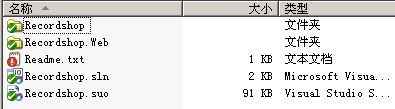
这个红色的叹号代表这个文件被修改了,这时候,提交更改,其他人即可看到你的更改.
重命名文件
使用TortoiseSVN更新,重命名工作副本中的Readme.txt文件为"Readme1.txt',然后保存,你会发现Readme.txt文件的图标改变了,如图:
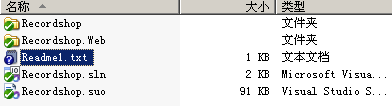
更添加文件一个道理,这时候你需要告诉TortoiseSVN你的操作,如图:
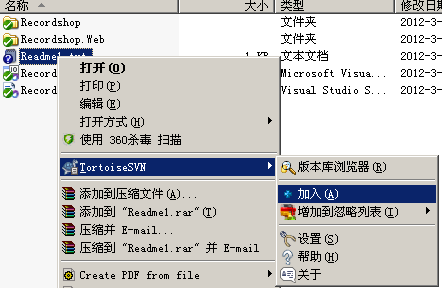
加入以后,提交,这时候版本库中的Readme.txt文件将会被重命名为"Readme1.txt".
删除文件
使用TortoiseSVN更新,使用TortoiseSVN删除工作副本中的Readme.txt文件,然后提交,版本库中的相应文件即被删除掉了,如图:
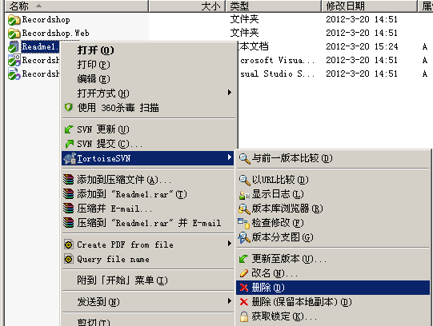
强制写注释
为了以后你能更清晰的看到你所做的每一次更改的原因,你在每次提交的时候应该写上注释,而且尽量详细.如图:
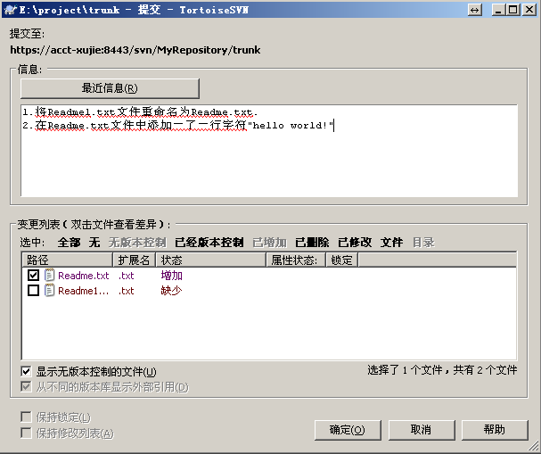
但是,可能有的人因为觉得太繁琐,而不填写注释,这不利于以后的版本控制,可以将强制在提交的时候写注释,首先单击右键,选择TortoiseSVN->属性,如图:
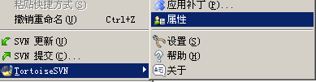
在弹出的对话框中,点击新建->日志大小,设置提交日志的最小字符数和锁定日志的最小字符数为20,提交文本框中显示边线的字符位置设置为100,点击确定,如图:
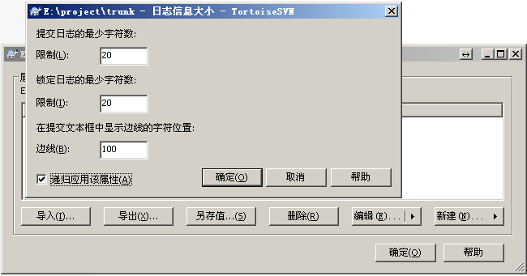
提交,以后再次提交的时候,如果输入的注释少于20个字符,将无法提交.
冲突解决
冲突问题是最常见的问题,它是这样产生的,A用户check out了一个工作副本A,接着B用户又check out了一个工作副本B.然后A用户对副本A中的文件C做了修改(可以是内容修改,文件删除,重命名,以及位置移动),并且提交.这时候B用户也对文件C的相同部分做了修改,这时候如果B用户进行提交,会先被告知版本过时,要求更新,然后更新的时候会提示冲突了,这时候可以用冲突编辑器进行手动选择.